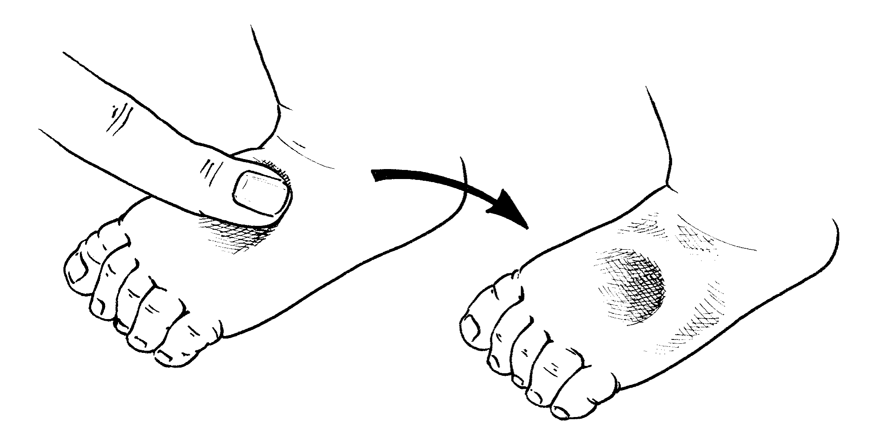

Çaganyň umumy ýagdaýyna baha beriň, umumy howplylyk ýa-da gaýragoýulmasyz alamatlarynyň barlygyna, onuň anamnezini ýygnanyňyzda indikileri göz öňünde tutup toplaň:
 soňky wagtdaky iýmiti we suwuklyklaryň berlişi;
soňky wagtdaky iýmiti we suwuklyklaryň berlişi;- adaty iýmitlenişi (soňky kesellemezinden ozal);
- göwüsden emdirmeklik;
- içgeçmäniň we gaýtarmanyň dowamlylygy;
- içgeçmäniň görnüşi (suwly ýa-da ganly);
- işdäniň peselmegi;
- maşgala ýagdaýy (sosial-ykdysady ýagdaýa baha bermek üçin);
- 2 hepdeden köp dowam edýän üsgülewik;
- inçe keselli näsag bilen galtaşma
- gyzamykly näsag bilen uzak bolmadyk wagtdaky galtaşma;
- tassyklanan ýa-da guman edilýän AIW- ýokanjy.
Barlag wagtynda indikilere üns beriň:
- suwsyzlygyň alamatlary;
- şok (sowuk eller, kapillýar doluganlylyk haýal geçýär (>3 sekint), gowşak we çaltlaşan puls we arterial basyşy peselen;
- aýalarynyň aýdyň soluklygy;
- iki aýagyndaky çişler
- A witaminiň gipowitaminozynyň alamatlary:
- konýuktiwanyň ýa-da buýnuzyň gurylygy, kserotiki blýaşkalar (Iskerskiý – Bito);
- Buýnuzyň ýaralary;
- keratomalýasiýa.
A witaminiň ýetmezçiliginden ejir çekýän çagalarda fotofobiýa bolýar, şonuň üçin olar gözlerini ýumuk saklaýarlar. Çaganyň gözlerini örän usullyk bilen barlamakly göz perdesi ýyrtylmaz ýaly.
- ýokanjyň lokal alamatlary, gulagyň ýokanjy, bogazyň ýokanjy, deriniň ýokanjy we pnewmoniýa bilen;
- AIW-ýokanjyň alamatlary (bap 8);
 beden gyzgynynyň ýokarlanmagy (beden gyzgyny ≥ 37,5°C) ýa-da gipotermiýa (rektal beden gyzgyny <35,5°C);
beden gyzgynynyň ýokarlanmagy (beden gyzgyny ≥ 37,5°C) ýa-da gipotermiýa (rektal beden gyzgyny <35,5°C);- agyz boşlugynyň ýaralary;
- kwaşiorkora mahsus bolan deridäki üýtgeşmeler:
- gipo- ýa-da giperpigmentasiýa;
- deskwamasiýa;
- ýaralar, soýulmalar (otyrýerine, butlaryna, gasyklaryna we gulagynyň arkasyna ýaýrap gidýän);
- deriniň ekksudatiw bozulmalary (agyr ýangyna meňzeş), köplenç ikilenji ýokançlyklar bilen bile geçýän (kandidoz ýagdaýy bilen hem).
- Işdäsiniň barlygyna barlamak üçin test geçiriň:
- Çaganyň işdäsiniň barlygyny barlaň, oňa taýýar bejeriş iýmiti hödürlemek bilen.
Çaganyň ganyny barlaň gemoglobiniň we gematokritiň derejelerini bilmek üçin, esasan-da aýalaryň aýdyň soluklygynda.